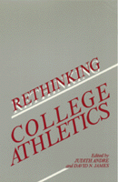

Why do colleges have intercollegiate athletics? Why should colleges keep them?
Why do colleges have intercollegiate athletics? Why should colleges keep them?


 Why do colleges have intercollegiate athletics? Why should colleges keep them?
Why do colleges have intercollegiate athletics? Why should colleges keep them?

|  |
Rethinking College Athleticsedited by Judith Andre and David N. Jamespaper EAN: 978-1-56639-002-6 (ISBN: 1-56639-002-8) |
"This timely and original collection addresses crucial issues in the areas of higher education, political culture, the sociology of leisure, and race relations."
—Andre Markovits, Professor, Department of Political Science, Boston University
College sport is a major part of our cultural landscape, but it is perennially troubled with rule violations, academic failure, and exploitation. As recent moral philosophy has turned to practical issues, it has somehow overlooked the problems in its own back yard. This collection of essays enables us to step back from the sports page for both a broader view and a deeper look at college athletics. The editors, who are themselves moral philosophers, have brought together many perspectives—phenomenology, game theory, aesthetics, cognitive science, as well as history, anthropology, economics, and sports medicine. The essays illuminate the values of sport and their corrosion within the university's commercial environment.
Does sport belong in college at all? If so, how can institutions preserve the real values of athletics while honoring those of the university? The book's contributors—philosophers, social scientists, and physical educators—examine the current status of sport in Western society: the reason for its importance, the kind of pleasure derived by both participants and spectators, problems faced by athletes, and the effects on the larger society of troubles within the world of sport.
Comparing university sport programs in the United States with those in other countries and examining problems that start with recruiting high school athletes, the authors ask whether present practices are justified. Determining the values that are intrinsic to sport, they explore how these values fit with the essential goals of universities. And they look at the peculiar features of revenue-producing sports and ask whether these change the nature of sport.
Excerpt available at www.temple.edu/tempress
"The 1982 NCAA college basketball championship was a showcase for intercollegiate athletics. Not only was the game thrilling and well played, it was decided on a last-minute jump shot by the University of North Carolina's brilliant freshman star, Michael Jordan. In addition, the two universities competing, Georgetown and the University of North Carolina, have fine academic reputations, and the two coaches, John Thompson of Georgetown and Dean Smith of UNC, were known not only for their knowledge of the game but also for their concern for the academic well-being of their students.
"Thus, it may have appeared to many members of the national television audience that intercollegiate athletics had never been in better shape. Unfortunately, if any viewers did form such an impression, further reflection may have dispelled it. In fact, although big-time intercollegiate athletics is enjoying unprecedented popularity, it also is plagued with problems. Many observers consider these problems so serious as to call the institution of intercollegiate athletics into serious moral question.
"Thus, only a few months after North Carolina's thrilling victory, another national basketball power, the University of San Francisco, which in the past had produced such great players as Bill Russell and K. C. Jones, announced that it had dropped intercollegiate basketball in order to preserve 'its integrity and its reputation.' According to USF President, the Rev. John Lo Schiavo, S.J., 'There are people for whom under the N.C.A.A. rules the university is responsible, who…are determined to break the rules presumably because they are convinced that the university cannot stay within the rules and maintain an effective competitive program.'
"The particular violations that broke the back of intercollegiate basketball at USF involved payments by alumni to a student athlete and other payments by other alumnus to pay high school tuition of an athlete the university was trying to recruit. However, these violations seem minor compared to what has been going on elsewhere in intercollegiate sports."
From Chapter 3: "Intercollegiate Athletics: Do They Belong on Campus?" by Robert L. Simon
"From the practical to the fanciful, this book offers a broad range of views about what can be done about the problems in college sports...for readers interested in a topic about which there has been precious little thoughtful analysis, Rethinking College Athletics is a valuable addition to the debate."
—The Christian Science Monitor
"The book...offers essays on the history, philosophy, aesthetics, and economics of college athletics.... [The] authors explore the benefits that sports bring to the athletes who play them, the spectators who watch them, and the institutions that sponsor them."
—The Chronicle of Higher Education
"The essays...are persuasive. The editors question if sports belong in college. They take an in-depth look at revenue-producing sports as inevitably destroying the good of the sport itself.... Through the presentation of different perspectives, Rethinking College Athletics will help one to imagine alternatives not yet attempted in college sport."
—Athletics Administration
Preface
Introduction
Part I: Foundations: History and Philosophy of Sports
1. The Anomaly of Intercollegiate Athletics – Allen Guttmann
2. The Greeks and the Meaning of Athletics – Lawrence J. Hatab
3. Intercollegiate Athletics: Do They Belong on Campus? – Robert L. Simon
Part II: Why Play? Goods for the Player
4. "When Power Becomes Gracious": The Affinity of Sport and Art – Drew Hyland
5. Feminism and the Sport Experience: Seeking Common Ground – Gail Whitaker
6. Nonsense on Stilts: A Skeptical View – Richard F. Galvin
Part III: Why Watch? Goods for the Spectator
7. Liveliness and Personality: The Content of the Aesthetic Object in Sport – Satoshi Higuchi
8. Waiting for DiMaggio: Sport as Drama – Joseph H. Kupfer
9. Sports and Art: Beginning Questions – Ted Cohen
10. Cognitive Errors in Sports Analysis – Richard Double
Part IV: Reform: The Example of Drugs
11. Banning Drugs in Sports: A Skeptical View – Norman Fost
12. Drug Testing and the Nature of Athletics – Roger Paden
13. On Banning Performance-Enhancing Drugs – Roger Paden
14. Cooperation Against Doping? – Gunnar Breivik
Part V: Beyond Reform: Some Radical Suggestions
15. The Economics of Intercollegiate Sports – Roger G. Noll
16. Why Everyone Deserves a Sporting Chance – Education, Justice, and College Sport – Janice Moulton
Part VI: Without Reform: A Different Hope
17. Memory, Attention, and the Communities of Sport – John J. MacAloon
Concluding Remarks: Where Do We Go from Here?
Guide to Further Reading
Notes on Contributors
Index
Judith Andre is Associate Professor of Philosophy at Old Dominion University.
David N. James is Assistant Professor of Philosophy at Old Dominion University.
Contributors: Gunnar Breivik, Ted Cohen, Richard Double, Norman Fost, Richard F. Galvin, Allen Guttmann, Lawrence J. Hatab, Satoshi Higuchi, Drew Hyland, Joshep H. Kupfer, John J. MacAloon, Janice Moulton, Roger G. Noll, Roger Paden, Robert L. Simon, Gail Whitaker, and the editors.
Philosophy and Ethics
General Interest
© 2015 Temple University. All Rights Reserved. This page: http://www.temple.edu/tempress/titles/707_reg.html.